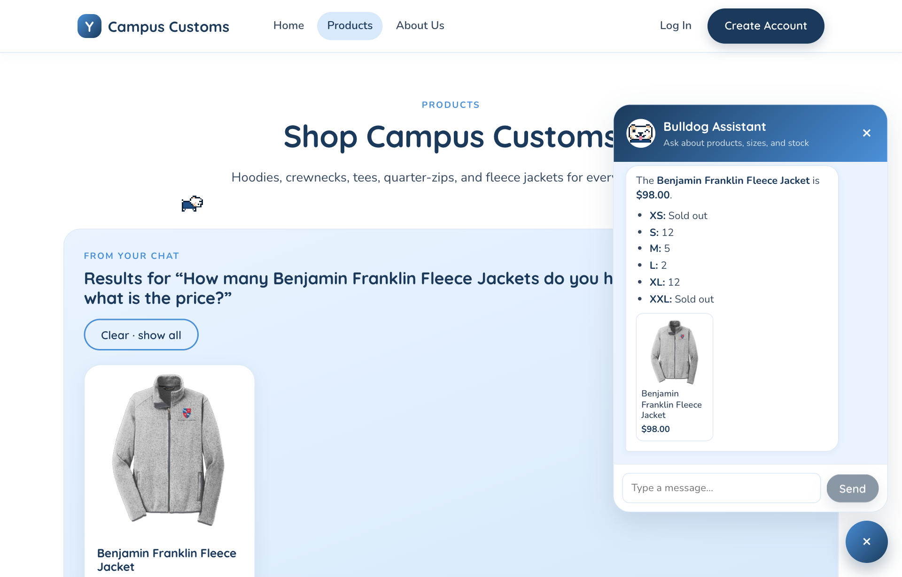
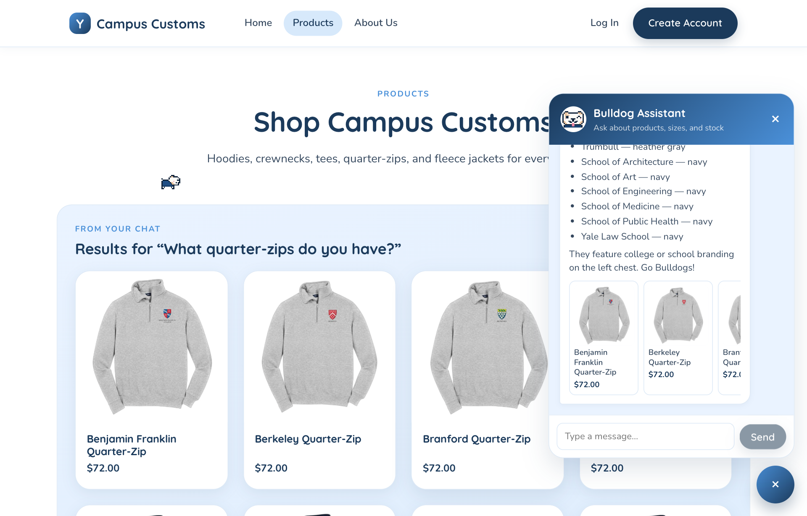
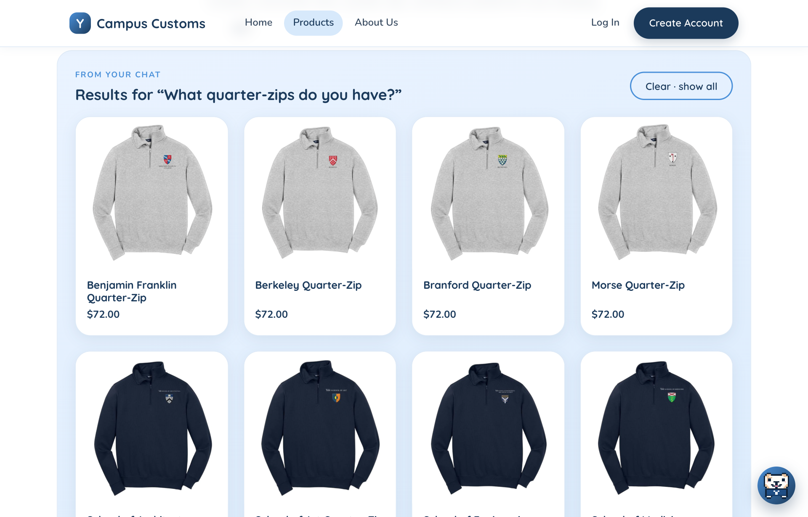
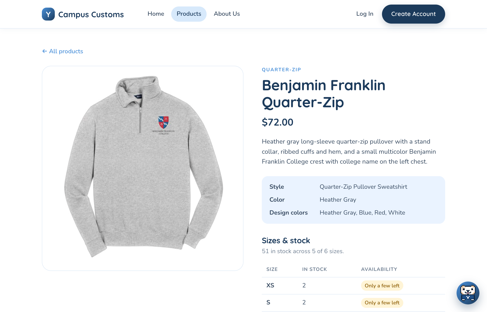
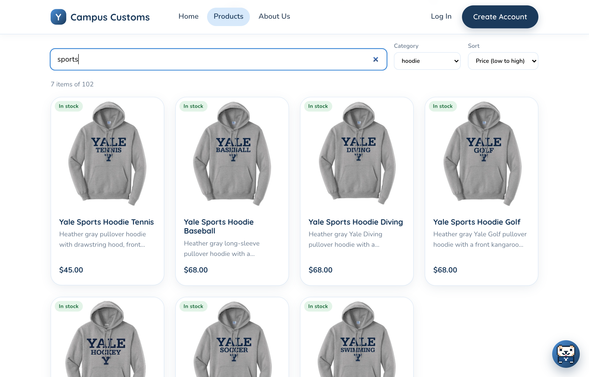

Problem 11 · Site testing
Campus Customs App Check
| Check | Result |
|---|---|
| 1. Chat reports an item's stock and price | Pass matches DB exactly |
| 2. Category question shows dynamic result cards | Pass 11 of 11 quarter-zips |
| 3. Usability feature: search, filter, and sort | Pass 7 of 7 hoodies, correct order |
| Issue found: chat showed raw Markdown | Fixed replies now render bold and lists |
1. Chat checks an item's inventory
“How many Benjamin Franklin Fleece Jackets do you have in each size, and what is the price?”

| Price | XS | S | M | L | XL | XXL | |
|---|---|---|---|---|---|---|---|
| Database | $98.00 | 0 | 12 | 5 | 2 | 12 | 0 |
| Chat reply | $98.00 | Sold out | 12 | 5 | 2 | 12 | Sold out |
2. Dynamic search-result cards from a category question
“What quarter-zips do you have?”


category = 'quarter-zip' in the database, with a “Clear · show all” button to go back to the full catalogue.

3. Usability feature: search, category filter, and sort (Problem 9, FE1)

| Items | First result | Order | |
|---|---|---|---|
| Database query | 7 | Yale Sports Hoodie Tennis, $45.00 | $45, then six at $68 |
| Products page | 7 items of 102 | Yale Sports Hoodie Tennis, $45.00 | $45, then six at $68 |
Issue found and fixed
Fixed The first test run showed the chat bubble printing the
agent's Markdown as plain text, so shoppers saw **$98** and - **XS:**
instead of bold text and bullets. The data was correct; only the formatting was wrong. The chat
widget now renders the agent's Markdown (bold, italics, bullet and numbered lists, paragraphs)
with a small built-in renderer that creates React elements rather than raw HTML
(frontend/src/components/ChatMarkdown.tsx). Screenshots 1 and 2 were retaken after the fix.